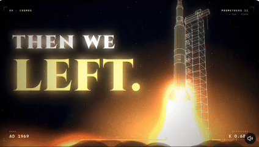
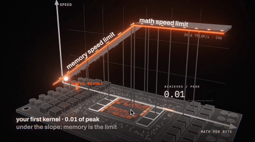
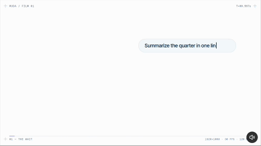
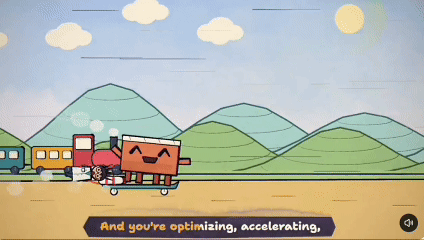
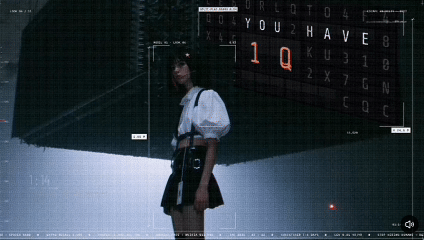
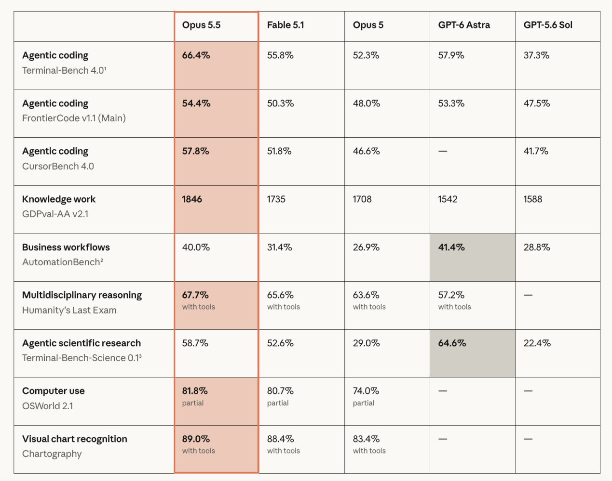

CLAUDE OPUS 5.5 · 视频热潮
9月24日，一位X用户发了一条2分16秒的短片，配文「我的天啊，我让Claude做了一个关于西方文明的视频」。
视频用线描风格的动画和踩着音乐节拍弹出的文字组成，讲述了文明从古希腊哲学到现代科技的发展历程。截至10月9日，帖子的浏览量已经达到了1500多万。

这个视频是用Anthropic在9月22日发布的Opus 5.5模型创作的。模型发布后的几周内，社交媒体上涌现出大量这样的视频，不少作品的浏览量达到了百万、千万量级。
刷屏的视频集中在几个类别——一类是知识讲解动画。它们用手绘、卡通、电影等不同风格，通过各种可视化图像和动效解释一个数学公式、一种自然现象或者一段历史。一类是动效展示片，主要涵盖品牌广告、产品介绍宣传片。还有人制作3D游戏演示视频和歌曲MV。



不过，Opus 5.5本身是个语言模型，不能直接生成图片和视频，它是用一行行代码把视频「画」出来的。
做一个视频大致需要这些步骤：首先是写分镜，模型决定每个镜头有什么画面、持续多久；接下来，模型为每个镜头写一段代码，常见的是网页技术——包括平面画布Canvas 2D、用坐标和数学描述图形的格式SVG、面向艺术创作的绘图库p5.js、网页3D库Three.js等等；第三步是模型使用后台运行的无头浏览器，把这些代码逐帧渲染成图像；最后，模型用FFmpeg工具把所有图像合成一个视频。
模型先决定：每个镜头有什么画面、持续多久。点上方「STEP 2」继续。
// 镜头 01：0.0s → 3.0s，每秒 30 帧 function draw(t) { // t = 当前时间（秒） // ① 线条在 1.2 秒内从左画到右 line.length = 560 * ease(t / 1.2); // ② 圆点沿线滑动 dot.x = 40 + 560 * ease((t - 0.3) / 2); // ③ 第 1.2 秒，标题踩点弹出 title.visible = t >= 1.2; // ④ 2.0 秒起，每 0.3 秒出一个词 words.shown = floor((t - 2.0) / 0.3) + 1; }
拖动时间轴：代码只规定「什么东西在什么时候，出现在什么位置」，每一帧的画面都是算出来的。高亮的是当前正在起作用的代码行。
无头浏览器在后台运行代码，把 t = 0, 1/30, 2/30 … 每个时刻的画面截成一张图片。
最后一步，FFmpeg 把所有图片按顺序拼成视频。换一句代码、重新渲染，就能改掉画面里的任何细节。
简单来说，模型输出了分镜文本和镜头代码，再调用工具做可视化呈现。代码规定「什么东西在什么时候，出现在什么位置」，写出某个物体的位置如何随时间变化，就能把画面算出来。
X上许多创作者称，输入一段Prompt后，Opus 5.5能够一次性完成上述所有的任务。
Seedance、可灵、Sora、Veo这些视频模型的原理，是用海量视频训练，学会了画面「应该长什么样」，生成时从一团随机噪点出发，一步步还原出每一帧的像素，这个过程叫扩散。而Opus 5.5做出的视频，画面里的元素都是代码写定的。
原理不同，产物也各有优劣。代码做的视频最大优势是稳定性高。画面里不会出现错字和乱码，局部修改时，也只需改一行代码重新渲染。不过，代码难以画出真人和自然光影的细节，近期刷屏的作品，几乎都是扁平图形、线描和文字动画。
除了用代码「画」视频，Opus 5.5在这波视频热潮中还展现出了更复杂的能力。
一位X用户制作了一支5分钟的歌曲MV，设定是一场「科技时装秀」。画面中，一位画风写实的女主角走过T台，她的每一套造型和音乐的每一句歌词，都对应一个技术热点和硅谷流行梗。这条帖子浏览量有1980万，被马斯克转发。

根据作者分享的制作过程，这段视频制作耗时19个小时，其中绝大多数时间是Claude Opus 5.5在「统筹」Midjourney、Seedance 2.5和Suno工作——Midjourney生成静态画面，Suno生成歌曲，Seedance 2.5生成让人物对口型的视频。Claude智能体通过作者已登录的浏览器自己打开这些AI工具、自己写提示词完成操作。音乐和画面做好之后，Claude再通过代码逐帧叠加歌词字幕和图形动画。
Claude内部有多个并行的「子智能体」。在写歌词的过程中，一批智能体先去搜集硅谷正在流传的热梗和科技新闻，接着多个「作词人」智能体写了几版歌词，由「评委」智能体择优汇总。在写分镜、做动效的过程中，多个智能体分别充当「导演」「动画师」和「美术指导」，各有分工。
作者在开工后的头两个小时向Claude交代了自己手上的第三方AI工具清单，讨论了歌曲和视频的整体风格，然后在prompt中写到，「剩下的你自己做，直到它成为一支了不起的MV，做完之前别停。」之后，作者只在主角形象确认、视频色调调整、分镜审核等几个节点介入，总共发送了约50条消息。
在这样的视频里，Opus 5.5的角色类似一个剧组的总导演，展现出的是调度能力：调度外部工具，也调度几十个分工协作的子智能体，连续工作十几个小时，把它们的产出组装成一支MV。
用语言模型写代码、做视频，并不是Opus 5.5发布后才出现的事。
2021年，基于React的开源编程式视频创作框架Remotion发布；2026年1月，Remotion的开发者推出了Agent Skills插件，允许创作者在AI工具中用自然语言创作视频。Remotion的案例库中已经有使用Opus 4.5制作的动画视频。
对于最近这些现象级的视频作品，用户社区更关注的是Opus 5.5在较少轮次的交互中完成整套视频制作任务的能力。制作一支几分钟的视频，需要持续处理素材和时间轴，画面出现问题，还需要检查、修改、重新渲染。模型既要会编程，也要能理解视觉材料、操作工具，并在长时间工作中保持对整体任务的把握。
Anthropic称，相比上一代模型Opus 5，Opus 5.5在多步骤编程、图表和截图理解、电脑操作，以及持续数小时的自主任务上都有改进。官方博客中提到，在一次测试中它无人看管地连续工作了超过18小时。

在成本方面，Opus 5.5也有一定优势。Anthropic称，Opus 5.5在多数任务中水平可以和Fable 5.1齐平，而成本比Opus 5低40%。
简单的动画视频制作成本变低了。有用户发帖称，他仅用1分钟、2美元、1句话的prompt，就做出了一段26秒的公司宣传视频，「过去，制作类似的视频需要数周甚至数月，需要与多家机构协调，成本更是现在的1000倍。」
「一句prompt生成整个视频」的易复现的制作方法，让这场热潮更容易传播和延续。有不少创作者公开了视频生成的prompt，还有人把自己做视频的过程打包成了skill。在Github上，已经有这样的skill获得了几千收藏。
千万播放的视频让用户直观地感受到，语言模型的编程能力已经能服务于内容创作，它统筹各类工具、持续执行任务的能力，也有机会应用到更多需要规划、协作和反复调整的复杂工作中。